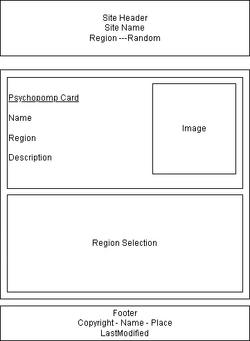

Site Name
whos-that-psychopomp.org
Site Purpose
A website with lots of information about the many psychopomps that exist in cultures and mythologies from around the world.
Scenarios
The people who would want to come to this site are going to be asking very specific questions like,
1.What is a psychompomp?
2.Where do they come from?
3.Where can I learn more?
Appealing to a very niche curiousity is what the website's intention is (again, see yourlogicalfallacyis.com as an example)Color Scheme and Typography
Still working on this, but the current working idea is to use a combination of charcoal for backgrounds, dark slate cards/surfaces, borders and dividers a grey, text an off-white and a grey, with an accent of blue.
For font style, headings will use IBM plex serif, body will use Inter, and stylistic inserts of EB Garamond for select text
Wireframe
Website Header with links and a button to select "region" or "random"
Main body alternates between two states. Either a "psychopomp card" or a region selection.
"Psychopomp cards" will have
1. A name
2. An image
3. A description
4. Links for more reading
In mobile version, everything will be in a single column while the wide version will have a more grid based style.A website footer with classic information
